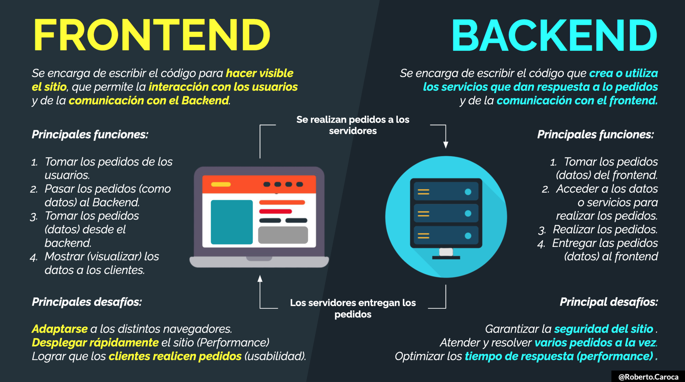
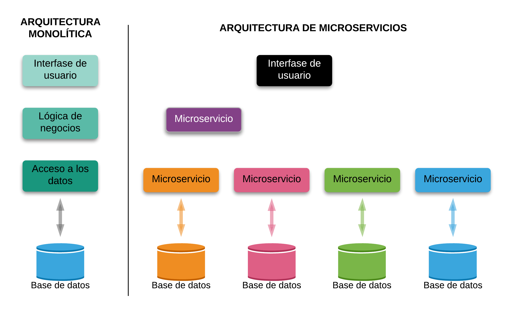
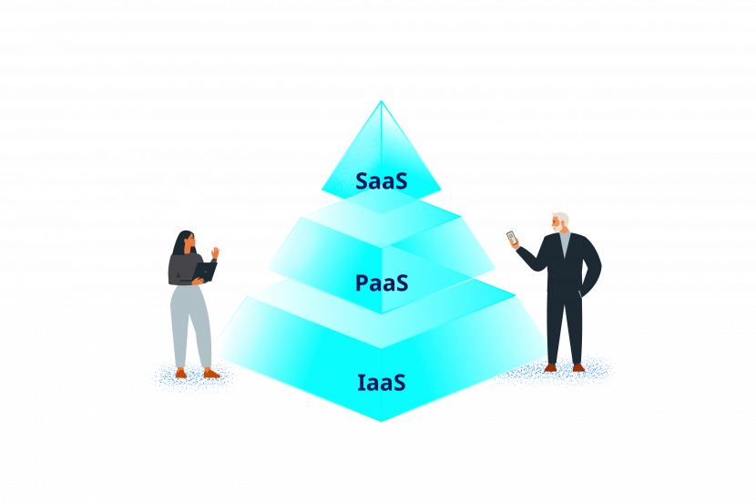
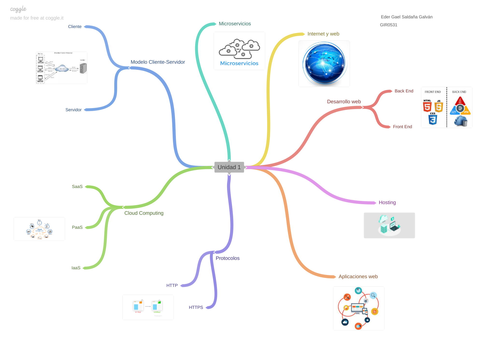

Es importante señalar la distinción entre estas dos palabras que se usan cada vez más de manera indistinta.
Vallejos (2017) describe que el Internet “Es una colección de miles de redes de computadoras, también conocida como la súper autopista de la información”. (pp. 2) Al ser una red de computadoras conectadas que abarca todo el mundo, ninguna empresa es su dueña; es producto de un esfuerzo cooperativo regido por un sistema de normas y reglas, cuyo propósito principal es compartir información.
Por otra parte, Robbins (2018), establece que la Web (World Wide Web, o www) es solo una de las formas en que la información puede compartirse a través de Internet. Es la única en la que permite que los documentos se vinculen entre sí mediante enlaces de hipertexto, formando así una enorme "red" de información conectada. (pp. 21) De esta forma podemos relacionar ambos conceptos, en donde la Web, es un conjunto de documentos interconectados por enlaces de hipertexto, disponibles en Internet que se pueden comunicar a través de la tecnología digital. Entendiéndose por “hipertexto” la mezcla de textos, gráficos y archivos de todo tipo en un mismo documento. (Latorre, 2020) En palabras simples, la Web es un subconjunto de Internet que contiene información a la que se puede acceder usando un navegador.
Web App, o “Aplicación Web”, es una versión mejorada de la página web, es una interpretación optimizada y ajustable a cualquier dispositivo móvil o tableta e independiente de los navegadores y sistemas operativos. No requiere de instalación, debido a que se carga en el servidor web y se ejecuta en el navegador. (InternetPasoaPaso.com, 2019)
El desarrollo web front-end consiste en la conversión de datos en una interfaz gráfica para que el usuario pueda ver e interactuar con la información de forma digital usando HTML, CSS y JavaScript. El frontend sirve para realizar la interfaz de un sitio web, desde su estructura hasta los estilos, como pueden ser la definición de los colores, texturas, tipografías, secciones, entre otros. Su uso es determinante para que el usuario tenga una buena experiencia dentro del sitio o aplicación.
Este término es utilizado para referirse al área lógica de toda página web. Nos referimos a la arquitectura interna del sitio que asegura que todos elementos desarrollen la función correcta. No está visible a ojos del usuario y no incluye ningún tipo de elemento gráfico. En otras palabras, el Back-End es la parte o rama del desarrollo web encargada de que toda la lógica de una página funcione. Consiste en el conjunto de acciones que pasan dentro de una web, pero que no podemos ver. Un ejemplo de esto es la comunicación con el servidor.

Un hosting es un servicio online que hace que se pueda acceder a tu sitio web en Internet. Cuando obtienes un hosting, básicamente alquilas un espacio en un servidor que almacena todos los archivos y datos de tu sitio web para que funcione correctamente. Para que tu página web esté siempre online y disponible, es necesario que dispongas de un alojamiento o hosting donde poder almacenar todo su contenido. Aunque dispongas de fondos suficientes para comprar tu propio servidor y una conexión a Internet muy potente, no es una buena idea. Resultaría demasiado costoso, por lo que alquilar un servicio de hosting es la mejor opción.

HTTP, de sus siglas en inglés: "Hypertext Transfer Protocol", es el nombre de un protocolo el cual nos permite realizar una petición de datos y recursos, como pueden ser documentos HTML. Es la base de cualquier intercambio de datos en la Web, y un protocolo de estructura cliente-servidor, esto quiere decir que una petición de datos es iniciada por el elemento que recibirá los datos (el cliente), normalmente un navegador Web. Así, una página web completa resulta de la unión de distintos sub-documentos recibidos, como, por ejemplo: un documento que especifique el estilo de maquetación de la página web (CSS), el texto, las imágenes, vídeos, scripts, etc.
HTTPS (protocolo de Transferencia de Hiper-Texto) es un protocolo que permite establecer una conexión segura entre el servidor y el cliente, que no puede ser interceptada por personas no autorizadas. En resumidas cuentas, es la versión segura de el http (Hyper Text Transfer Protocol) Una conexión HTTP estándar en Internet puede ser fácilmente secuestrada por partes no autorizadas. El propósito de una conexión HTTPS es evitar esto: encriptar los datos para asegurar una transmisión de datos segura. La transmisión está encriptada y el servidor autenticado.

La arquitectura cliente-servidor es un modelo de diseño de software en el que las tareas se reparten entre los proveedores de recursos o servicios, llamados servidores, y los demandantes, llamados clientes. Un cliente realiza peticiones a otro programa, el servidor, quien le da respuesta. Esta idea también se puede aplicar a programas que se ejecutan sobre una sola computadora, aunque es más ventajosa en un sistema operativo multiusuario distribuido a través de una red de computadoras.
El cliente es un computador pequeño con una estructura al igual a la que tenemos en nuestras oficinas u hogares la cual accede a un servidor o a los servicios del mismo a través de Internet o una red interna. Un claro ejemplo a este caso es la forma en que trabaja una empresa modelo con diferentes computadores donde cada uno de ellos se conectan a un servidor para poder obtener archivos de una base de datos o servicios ya sea correos electrónicos o aplicaciones.
El servidor al igual que el cliente, es una computadora pero con diferencia de que tiene una gran capacidad que le permite almacenar gran cantidad de diversos de archivos, o correr varias aplicaciones en simultaneo para así nosotros los clientes poder acceder los servicios.

Los microservicios son los miles de estándares web, lenguajes de programación, plataformas de bases de datos y componentes de servidores web independientes que los desarrolladores utilizan como herramientas en el ciclo de vida del desarrollo de software contemporáneo. La arquitectura de microservicios es un enfoque para el desarrollo de software que consiste en construir una aplicación como un conjunto de pequeños servicios, los cuales se ejecutan en su propio proceso y se comunican con mecanismos ligeros.
Cloud computing es la disponibilidad bajo demanda de recursos de computación como servicios a través de Internet. Esta tecnología evita que las empresas tengan que encargarse de aprovisionar, configurar o gestionar los recursos y permite que paguen únicamente por los que usen.
Software como un Servicio o SaaS es un modelo de distribución de software donde el soporte lógico y los respectivos datos que maneja se alojan en los servidores de un proveedor, cuyo acceso es a través de Internet. El proveedor no solo proporciona el hardware, sino también el software correspondiente.
Plataforma como servicio (PaaS) es un entorno en la nube integral que incluye todo lo que los desarrolladores necesitan para crear, ejecutar y gestionar aplicaciones, desde servidores y sistemas operativos hasta redes, almacenamiento, middleware, herramientas y más.
La infraestructura como servicio (IaaS) es un modelo de servicio en la nube que ofrece recursos de infraestructura bajo demanda, como computación, almacenamiento, redes y virtualización, a empresas y particulares a través de la nube.
Este es mi mapa mental
